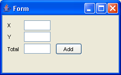
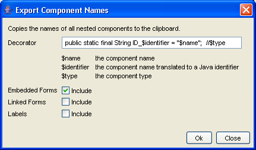
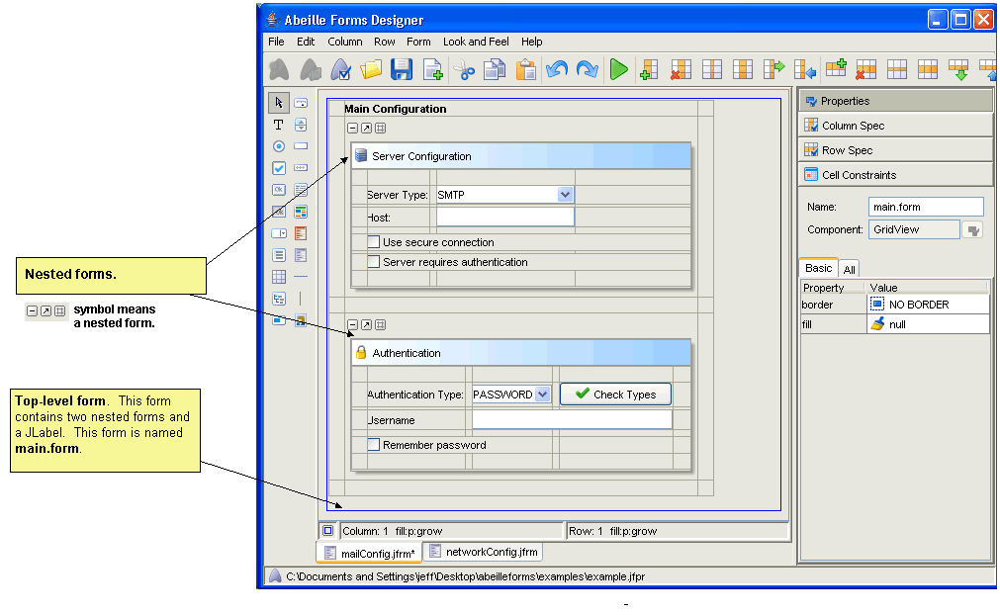

Changing a Form Programmatically
Once your form has been designed, you need to integrate it into your application. Forms generally require initialization by loading data from a model. Additionally, forms require event handlers for user input. The Abeille Forms Designer is a layout builder only. It does not manage Java code for event handling nor initialization. However, Abeille forms are very simple to use and incorporate into your new or existing code.
The first step in integrating Abeille Forms with your code is to include the forms runtime JAR file (formsrt.jar) in your classpath. You may freely distribute this JAR with your application.
It is assumed that you will be using named packages for your
application, and we recommend that you store your form files in the same
package as your Java source. Assuming we have a form file in the following
package: com/mycorp/app/users/usersView.jfrm, it is trivial to create a
Swing component that displays this form. The class for loading forms is
com.jeta.forms.components.FormPanel. This class is derived from
javax.swing.JPanel so it can easily be used in all Swing containers (e.g.
JSplitPane, JDialog, JTabbedPane)
.
import com.jeta.forms.components.panel.FormPanel; ... // FormPanel is derived from JPanel (see the API docs for more information) FormPanel form = new FormPanel( "com/mycorp/app/users/usersView.jfrm" ); |
During runtime, the FormPanel will attempt to load the usersView.jfrm from the classpath. Since your forms are stored along with your source files, it is unlikely that they will be in the classpath. There are two ways to solve this problem. The easiest is to set the directory where your classes are stored in the project settings dialog. If this paramter is set, the Forms Designer will automatically copy the form to the classpath when it is saved. If you are using an IDE, this is probabaly the easiest approach.
Another solution is to add a command to your build scripts to copy your
form files to your classpath after you perform a compile. Many developers
employ Ant, and the Ant command for doing this is as follows:
<copy todir="${classes}">
<fileset dir="${src}">
<include name="**/*.jfrm" />
</fileset>
</copy> |
Working with Swing Components
Abeille Forms is geared toward Swing Components. You can also import lightweight components using the Bean Manager. When designing your forms, it is important to assign unique names to each component (labels are an exception since you rarely need to access label components in your code). Components can be named using the Properties window in the designer.
You can access form components in your code by calling
FormPanel.getComponentByName. FormPanel also has get methods for most of
the Swing components. The following table is a partial list of the component
getters supported by FormPanel.
FormPanel component getters public AbstractButton getButton( String compName ) public JCheckBox getCheckBox( String compName ) public JComboBox getComboBox( String compName ) public Component getComponentByName( String componentName ) public Collection getComponentsByName( String compName ) public int getInteger( String compName, int defaultValue ) public JLabel getLabel( String compName ) public JList getList( String compName ) public JPanel getPanel( String compName ) public JRadioButton getRadioButton( String compName ) public Object getSelectedItem( String compName ) public JSpinner getSpinner( String compName ) public JTable getTable( String compName ) public JTextField getTextField( String compName ) public String getText( String compName ) |
Suppose we had the following form (calculateView.jfrm):

The user can enter values for X and Y. When the Add button is pressed, the sum of X and Y is stored in the Total field. When you design this form, you should name the text fields as follows: x.field, y.field, total.field, and add.btn. Component names are assigned in the Properties window in the designer.
You could access the form components from your code as follows:
FormPanel panel = new FormPanel( "calculateView.jfrm" );
JTextField xfield = panel.getTextField( "x.field" );
AbstractButton addbtn = panel.getButton( "add.btn" );
//... |
This approach will work, but it is better to declare your String
literals rather than use them directly. The following is a better approach:
FormPanel panel = new FormPanel( "calculateView.jfrm" ); JTextField xfield = panel.getTextField( CalculateNames.ID_X_FIELD ); AbstractButton addbtn = panel.getButton( CalculateNames.ID_ADD_BTN ); //... |
where CalculateNames.java is defined as:
/**
* Component names for the calculateView.jfrm
* The declarations in this class were generated by the
* Export Names feature in the Abeille Forms Designer.
*/
public class CalculateNames
{
public static final String ID_X_FIELD = "x.field"; //javax.swing.JTextField
public static final String ID_Y_FIELD = "y.field"; //javax.swing.JTextField
public static final String ID_TOTAL_FIELD = "total.field"; //javax.swing.JTextField
public static final String ID_ADD_BTN = "add.btn"; //javax.swing.JButton
}
|
Abeille Forms Designer has an Export Names feature that makes it easy to generate the String declarations for these types of Java files. Select the Export Names submenu from the Form Menu. This will invoke the following dialog:

Here you can control the format of the export names for your form. The default format declares Java identifiers for each component name. The result is copied to the clipboard.
Once you've defined your identifiers file for your form, you can then write your event handlers and form logic as follows:
import java.awt.BorderLayout;
import java.awt.event.ActionEvent;
import java.awt.event.ActionListener;
import javax.swing.JPanel;
import com.jeta.forms.components.panel.FormPanel;
/**
* View that contains the calculateView.jfrm
*/
public class CalculateView extends JPanel
{
/**
* The form object
*/
private FormPanel m_form;
/**
* ctor
*/
public CalculateView()
{
m_form = new FormPanel( "calculateView.jfrm" );
setLayout( new BorderLayout() );
add( m_form, BorderLayout.CENTER );
/** now add action listeners */
m_form.getButton( CalculateNames.ID_ADD_BTN ).addActionListener( new ActionListener()
{
public void actionPerformed( ActionEvent evt )
{
calculateSum();
}
});
}
/**
* Retrieves the X and Y parameters from the form, adds them together, and
* stores the result in the Total text field.
*/
void calculateSum()
{
int x = Integer.parseInt( m_form.getText( CalculateNames.ID_X_FIELD ) );
int y = Integer.parseInt( m_form.getText( CalculateNames.ID_Y_FIELD ) );
m_form.setText( CalculateNames.ID_TOTAL_FIELD, String.valueOf(x + y) );
}
}
|
The Forms Designer architecture fits very well into Model-View-Controller architectures. It provides a clean separation between your view, model, and event handlers. The FormPanel (or a JPanel that contains a FormPanel) plays the role of the view. It is recommended that you create a seperate controller class and place your event handlers (ActionListeners) in that class. It is also recommened that you reference all components by name.
The Forms Designer does not manage event handling. However, the API
makes it very easy to add event listeners to components on your form. The Forms
Designer uses forms extensively in the product, and we employ the following
pattern for GUIs.
public class MyView extends JPanel
{
private FormPanel m_view;
public MyView()
{
m_view = new FormPanel( "myview.jfrm" );
setLayout( new BorderLayout() );
add( m_view, BorderLayout.CENTER );
// create the controller for this view
new MyController( this );
}
FormPanel getForm() { return m_view; }
/**
* Initialize the view from the model
*/
public void loadModel( MyModel model )
{
//....
}
}
|
public class MyController
{
private MyView m_view;
public MyController( MyView view )
{
m_view = view;
FormPanel form = view.getForm();
form.getButton( MyNames.ID_ADD_BUTTON ).addActionListener( new AddAction() );
form.getButton( MyNames.ID_SUB_BUTTON ).addActionListener( new SubtractAction() );
}
public class AddAction implements ActionListener
{
public void actionPerformed( ActionEvent evt )
{
// add handler
}
}
public class SubtractAction implements ActionListener
{
public void actionPeformed( ActionEvent evt )
{
// subtract handler
}
}
}
|
Some applications require a form to change dynamically. Wizards are an example of a GUI that must update the view during runtime. The Forms Designer API provides a mechanism for doing this via the FormAccessor.
A form can have nested forms. For each form there is an associated FormAccessor instance. The FormAccessor allows you to iterate over the components in a form as well as add, remove, and replace components. You should use the FormAccessor instead of the java.awt.Container methods. The reason is because the form container hierarchy may change in the future, and FormAccessor will insulate your code from these changes.
To use FormAccessors properly, you should name every nested form in your GUI. This includes the main, top-level form.

Assume we are using the form in the above figure. Also assume that
the two nested forms were named "server.config.panel" and
"authentication.panel" respectively. You could retrieve FormAccessors for each
of these forms using the following code:
FormPanel panel = new FormPanel( "mailConfig.jfrm" ); FormAccessor top_accessor = panel.getFormAccessor( "main.form" ); FormAccessor server_accessor = panel.getFormAccessor( "server.config.panel" ); FormAccessor auth_accessor = panel.getFormAccessor( "authentication.panel" ); |
Once you've obtained a FormAccessor for a form, you can then iterate,
add, remove, or replace components on that form. The FormAccessor also provides
access to the underlying FormLayout and container instances. The following
listing shows the FormAccessor interface. Refer to the API for more complete
documentation of this interface.
public interface FormAccessor
{
/** returns the cellconstraints for a given component */
CellConstraints getConstraints( Component comp );
/** adds a component to the form using the given constraints */
void addBean( Component comp, CellConstraints cc );
/** returns the underlying FormLayout container */
Container getContainer();
/** iterates over the beans in the associated form */
Iterator beanIterator();
/** includes beans in nested forms */
Iterator beanIterator( boolean nested );
/** removes a bean from the form */
Component removeBean( Component comp );
Component removeBean( String compName );
/** replaces an existing bean on the form */
Component replaceBean( Component oldComp, Component newComponent );
Component replaceBean( String compName, Component newComponent );
}
|